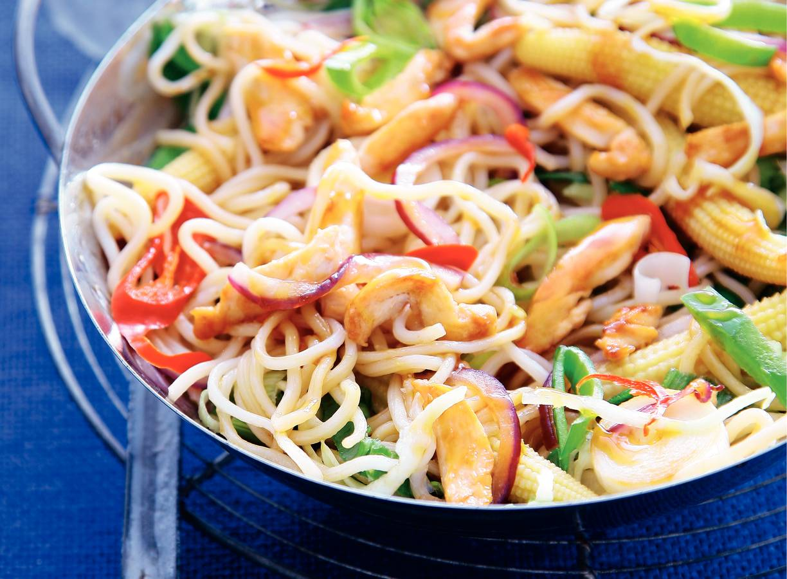

3 Lekkere recepten

Ingredienten
-
2 el arachideolie
-
300 g kipfiletreepjes
-
400 g Thaise wokgroente
-
425 g babymaiskolfjes
-
150 ml verse woksaus teriyaki
Berdeiding
-
Verhit de olie in een wok en roerbak de kip 3 min. op hoog vuur gaar. Voeg de Thaise wokgroente toe en roerbak nog 3 min.
-
Laat de mais uitlekken. Voeg de mais en de woksaus toe aan de groente, schep de noedels erdoor en roerbak alles nog 1 min. op hoog vuur. Verdeel over kommen en serveer direct.